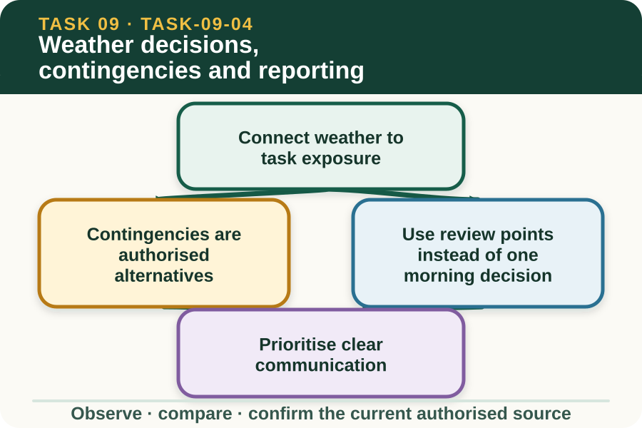

Classroom presentation · 8 slides
Weather decisions, contingencies and reporting
Task 9 · 1 of 8
Weather decisions, contingencies and reporting
Adjust a fictional work schedule, record the reason and communicate the change through the correct channel.

Speaker notes
Teaching move (web-deck purpose): Use the module visual and the fictional worked example to move students from observation to a source-led decision. Ask students to name the evidence, the authority gap and the next safe communication step. Misconception and help: Name the task, exposed people or resources and the possible effect. Condition plus task exposure leads to a reportable impact. Applied action: Run a fictional weather schedule review. Use a teacher-provided dated schedule and saved weather update. Mark exposed tasks, draft one report to the supervisor and record the confirmed fictional change. Do not create a real emergency threshold or instruction. Boundary: This supplementary learning draws on mapped AHCWRK210 concepts. Current signed TAS and RTO documents control cohort delivery, assessment and competency decisions; current workplace procedures, supervision and authorised sources control real work. [Sources] - Source basis: AHCWRK210 Release 1 requirements to discuss preventative action, adjust work, monitor updates and complete records; NESA Weather focus-area task-impact concepts; authorised teacher-posted weather notes. Current Bureau and workplace sources control real contingencies. - Visual visual-task-09-04: Generated locally from accepted Stage 05 module headings; no external image copied. - Course visual manifest: work/pi/visuals/visual-manifest.json
Task 9 · 2 of 8
Map the learning
- Connect weather to task exposure
- Contingencies are authorised alternatives
- Use review points instead of one morning decision
Retrieve: What makes a weather impact statement useful?
Speaker notes
Teaching move (learning map): Use the module visual and the fictional worked example to move students from observation to a source-led decision. Ask students to name the evidence, the authority gap and the next safe communication step. Misconception and help: Name the task, exposed people or resources and the possible effect. Condition plus task exposure leads to a reportable impact. Applied action: Run a fictional weather schedule review. Use a teacher-provided dated schedule and saved weather update. Mark exposed tasks, draft one report to the supervisor and record the confirmed fictional change. Do not create a real emergency threshold or instruction. Boundary: This supplementary learning draws on mapped AHCWRK210 concepts. Current signed TAS and RTO documents control cohort delivery, assessment and competency decisions; current workplace procedures, supervision and authorised sources control real work. [Sources] - Source basis: AHCWRK210 Release 1 requirements to discuss preventative action, adjust work, monitor updates and complete records; NESA Weather focus-area task-impact concepts; authorised teacher-posted weather notes. Current Bureau and workplace sources control real contingencies. - Visual visual-task-09-04: Generated locally from accepted Stage 05 module headings; no external image copied. - Course visual manifest: work/pi/visuals/visual-manifest.json
Task 9 · 3 of 8
Notice the evidence
Connect weather to task exposure
Weather matters through its interaction with a task, people, animals, access, equipment, materials and timing. The same forecast can have different consequences for work in an open paddock, a sheltered shed or a transport route.
Describe the exposure before proposing a change. This keeps reasoning specific and prevents a broad weather word such as hot or wet from becoming an unsupported stop-or-go rule.
Contingencies are authorised alternatives
A contingency is a planned alternative if stated conditions affect the original job. It might change timing, location, sequence, resources or task allocation, but the acceptable option and trigger come from the workplace plan and supervisor.
A learner can gather evidence, explain the possible impact and ask for confirmation. They should not invent a local emergency threshold, move animals, redirect vehicles or create a new operational method through a website response.
Speaker notes
Teaching move (theory idea 1): Use the module visual and the fictional worked example to move students from observation to a source-led decision. Ask students to name the evidence, the authority gap and the next safe communication step. Misconception and help: Name the task, exposed people or resources and the possible effect. Condition plus task exposure leads to a reportable impact. Applied action: Run a fictional weather schedule review. Use a teacher-provided dated schedule and saved weather update. Mark exposed tasks, draft one report to the supervisor and record the confirmed fictional change. Do not create a real emergency threshold or instruction. Boundary: This supplementary learning draws on mapped AHCWRK210 concepts. Current signed TAS and RTO documents control cohort delivery, assessment and competency decisions; current workplace procedures, supervision and authorised sources control real work. [Sources] - Source basis: AHCWRK210 Release 1 requirements to discuss preventative action, adjust work, monitor updates and complete records; NESA Weather focus-area task-impact concepts; authorised teacher-posted weather notes. Current Bureau and workplace sources control real contingencies. - Visual visual-task-09-04: Generated locally from accepted Stage 05 module headings; no external image copied. - Course visual manifest: work/pi/visuals/visual-manifest.json
Task 9 · 4 of 8
Use the source boundary
Use review points instead of one morning decision
Weather can change after work begins, so a schedule needs review points connected to current updates and local observations. A plan that was reasonable at 7:00 am may need reconsideration when a warning changes or site conditions deteriorate.
The record should identify who reviews the information and how affected people receive the confirmed change. This makes monitoring a continuing part of work rather than a one-off check.
Prioritise clear communication
A useful report states the current source and time, local observation, exposed task, possible consequence, present work status and decision needed. It avoids dramatic language and does not hide uncertainty.
Closed-loop communication is important when a change affects several workers. The supervisor confirms the response, affected people receive the same message and the learner checks that the updated instruction is understood.
Speaker notes
Teaching move (theory idea 2): Use the module visual and the fictional worked example to move students from observation to a source-led decision. Ask students to name the evidence, the authority gap and the next safe communication step. Misconception and help: Name the task, exposed people or resources and the possible effect. Condition plus task exposure leads to a reportable impact. Applied action: Run a fictional weather schedule review. Use a teacher-provided dated schedule and saved weather update. Mark exposed tasks, draft one report to the supervisor and record the confirmed fictional change. Do not create a real emergency threshold or instruction. Boundary: This supplementary learning draws on mapped AHCWRK210 concepts. Current signed TAS and RTO documents control cohort delivery, assessment and competency decisions; current workplace procedures, supervision and authorised sources control real work. [Sources] - Source basis: AHCWRK210 Release 1 requirements to discuss preventative action, adjust work, monitor updates and complete records; NESA Weather focus-area task-impact concepts; authorised teacher-posted weather notes. Current Bureau and workplace sources control real contingencies. - Visual visual-task-09-04: Generated locally from accepted Stage 05 module headings; no external image copied. - Course visual manifest: work/pi/visuals/visual-manifest.json
Task 9 · 5 of 8
Connect evidence to action
Record the reason, not just the outcome
A schedule record should show the original task, evidence considered, authorised decision, time of change, person confirming it, people notified and next review. This demonstrates why the plan changed without creating a private weather rule.
Use factual language and avoid blaming a source for uncertainty. Forecasts support decisions within their limits; the workplace is responsible for applying current information to its people and operations.
Review what the decision protected
After the event, compare the information available at each decision point with the action actually taken. The goal is to improve source checks, timing, communication and contingency readiness, not to judge an earlier decision using information that only became available later.
A review can identify a missing update point or unclear handover for the supervisor to improve. It cannot establish competency or replace the RTO's authorised observation and assessment process.
Speaker notes
Teaching move (theory idea 3): Use the module visual and the fictional worked example to move students from observation to a source-led decision. Ask students to name the evidence, the authority gap and the next safe communication step. Misconception and help: Name the task, exposed people or resources and the possible effect. Condition plus task exposure leads to a reportable impact. Applied action: Run a fictional weather schedule review. Use a teacher-provided dated schedule and saved weather update. Mark exposed tasks, draft one report to the supervisor and record the confirmed fictional change. Do not create a real emergency threshold or instruction. Boundary: This supplementary learning draws on mapped AHCWRK210 concepts. Current signed TAS and RTO documents control cohort delivery, assessment and competency decisions; current workplace procedures, supervision and authorised sources control real work. [Sources] - Source basis: AHCWRK210 Release 1 requirements to discuss preventative action, adjust work, monitor updates and complete records; NESA Weather focus-area task-impact concepts; authorised teacher-posted weather notes. Current Bureau and workplace sources control real contingencies. - Visual visual-task-09-04: Generated locally from accepted Stage 05 module headings; no external image copied. - Course visual manifest: work/pi/visuals/visual-manifest.json
Task 9 · 6 of 8
Retrieve and check
What makes a weather impact statement useful?
- It links a current condition to a specific task exposure and possible consequence.
- It says the weather is terrible without naming the task.
- It invents one rule that applies to every property.
Teacher reveal
Correct. The link explains why the evidence matters for the planned work.
Condition plus task exposure leads to a reportable impact.
Speaker notes
Teaching move (retrieval): Use the module visual and the fictional worked example to move students from observation to a source-led decision. Ask students to name the evidence, the authority gap and the next safe communication step. Misconception and help: Name the task, exposed people or resources and the possible effect. Condition plus task exposure leads to a reportable impact. Applied action: Run a fictional weather schedule review. Use a teacher-provided dated schedule and saved weather update. Mark exposed tasks, draft one report to the supervisor and record the confirmed fictional change. Do not create a real emergency threshold or instruction. Boundary: This supplementary learning draws on mapped AHCWRK210 concepts. Current signed TAS and RTO documents control cohort delivery, assessment and competency decisions; current workplace procedures, supervision and authorised sources control real work. [Sources] - Source basis: AHCWRK210 Release 1 requirements to discuss preventative action, adjust work, monitor updates and complete records; NESA Weather focus-area task-impact concepts; authorised teacher-posted weather notes. Current Bureau and workplace sources control real contingencies. - Visual visual-task-09-04: Generated locally from accepted Stage 05 module headings; no external image copied. - Course visual manifest: work/pi/visuals/visual-manifest.json Use option-specific feedback after the learner commits to an answer.
Task 9 · 7 of 8
Construct a source-led response
Revise a fictional work schedule after a dated weather update. Explain the task exposure, evidence, proposed contingency, authorisation point, communication and next review.
- The original fictional task and time are…
- The current source and local observation show…
- The specific task exposure is…
- I would ask the authorised supervisor to confirm…
- After confirmation, I would notify… and record…
- The next review would use… at…
Success criteria
- Connects weather evidence to a specific exposure
- Uses a current-source and local-plan boundary
- Shows a closed communication loop
- Records the reason and next review without inventing thresholds
Speaker notes
Teaching move (guided written response): Use the module visual and the fictional worked example to move students from observation to a source-led decision. Ask students to name the evidence, the authority gap and the next safe communication step. Misconception and help: Name the task, exposed people or resources and the possible effect. Condition plus task exposure leads to a reportable impact. Applied action: Run a fictional weather schedule review. Use a teacher-provided dated schedule and saved weather update. Mark exposed tasks, draft one report to the supervisor and record the confirmed fictional change. Do not create a real emergency threshold or instruction. Boundary: This supplementary learning draws on mapped AHCWRK210 concepts. Current signed TAS and RTO documents control cohort delivery, assessment and competency decisions; current workplace procedures, supervision and authorised sources control real work. [Sources] - Source basis: AHCWRK210 Release 1 requirements to discuss preventative action, adjust work, monitor updates and complete records; NESA Weather focus-area task-impact concepts; authorised teacher-posted weather notes. Current Bureau and workplace sources control real contingencies. - Visual visual-task-09-04: Generated locally from accepted Stage 05 module headings; no external image copied. - Course visual manifest: work/pi/visuals/visual-manifest.json
Task 9 · 8 of 8
Close the loop
Run a fictional weather schedule review
Use a teacher-provided dated schedule and saved weather update. Mark exposed tasks, draft one report to the supervisor and record the confirmed fictional change. Do not create a real emergency threshold or instruction.
- Name the strongest evidence in the scenario.
- Explain the decision or referral it supports.
- State which current source or authorised person controls real work.
Boundary: This supplementary learning draws on mapped AHCWRK210 concepts. Current signed TAS and RTO documents control cohort delivery, assessment and competency decisions; current workplace procedures, supervision and authorised sources control real work.
Speaker notes
Teaching move (exit and application): Use the module visual and the fictional worked example to move students from observation to a source-led decision. Ask students to name the evidence, the authority gap and the next safe communication step. Misconception and help: Name the task, exposed people or resources and the possible effect. Condition plus task exposure leads to a reportable impact. Applied action: Run a fictional weather schedule review. Use a teacher-provided dated schedule and saved weather update. Mark exposed tasks, draft one report to the supervisor and record the confirmed fictional change. Do not create a real emergency threshold or instruction. Boundary: This supplementary learning draws on mapped AHCWRK210 concepts. Current signed TAS and RTO documents control cohort delivery, assessment and competency decisions; current workplace procedures, supervision and authorised sources control real work. [Sources] - Source basis: AHCWRK210 Release 1 requirements to discuss preventative action, adjust work, monitor updates and complete records; NESA Weather focus-area task-impact concepts; authorised teacher-posted weather notes. Current Bureau and workplace sources control real contingencies. - Visual visual-task-09-04: Generated locally from accepted Stage 05 module headings; no external image copied. - Course visual manifest: work/pi/visuals/visual-manifest.json